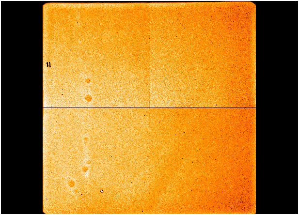

Most of the processing steps described here are implemented within an IRAF package called lirisdr.
There is a directory associated with the lirisdr tasks which is used as a repository for calibration files which can be used as default. The usual location is a subdirectory called std under the package directory tree.
These notes are divided into three main sections:
Multiobject
Currently there is a shift of pixels on the detector which does not correspond to the actual geometrical location, which is due to the reading scheme of the LIRIS detector. However it is relatively simple to correct and there exist a C routine for such purpose.
It is also possible to perform the correction within lirisdr/IRAF using the task lcpixmap.
There is an effect of row cross-talk between quadrants which produces an uniform shading in the rows containing bright sources and also in the corresponding rows of the other quadrants. The magnitude of this shadow is around 1.5E-5 on the sum of the affected row. This effect can be noticed when the detector is exposed to very bright sources in imaging mode. The effect becomes very relevant in multi -object spectroscopy, especially when bright sources, used as reference, are combined with very faint targets. Special care must be taken if the distance between them is around 128".
Currently the LIRIS detector rows correspond to the spectral dispersion axis.
The IRAF task rctalk within lirisdr performs the correction of the row cross-talk. It is recommended to do not correct the effect unless it affects significantly the results.
Different mask types may be created and combined to form a final mask. In general bad pixels can be classified into three categories:
hot pixels - these pixels show an enhanced level of counts even without receiving any illumination. The number of hot pixels increases with the exposure time (nearly proportional to log(texp). The location of hot pixels can be well determined from dark frames taken with the same exposure time as the science frames.
warm pixels - these pixels appear as less sensitive units with respect to the average.
cold or blind pixels - these pixels always exhibit a very low count level, appearing as dark spots in the detector. The location of cold pixels can be well determined from flat-field or blank sky frames.
The IRAF routine ccdmask can be used to generate the masks starting from the appropiate images.
In general flat-field images will be taken during twilights or by illumination of the dome, as uniformly as possible. It is recommended to have illumination level around 8000-10000 ADUs. For the filters covering the K band spectral range it is recommended to obtain bright and dark frames of the same exposure time, in order to suppress the possible thermal contamination of the telescope enviroment.
The flatfield images can be combined using the IRAF task imcombine
|  |
| Example of a flat-field image taken through the Ks filter. There is left-to-right slope accounting for about 25 - 30 % difference in response. |
The field distorsion can be determined using stars in the images which are well calibrated astrometrically or using a reference mask which can be inserted in the LIRIS focal plane. In the second option we can determined a geometrical transformation which can be applied to any frame. It has been checked that this transformation is not very sensitive to the telescope position or instrument orientation. Therefore a single transformation can be used.
All routines used to reduce the data in imaging mode are contained within the package limage. The main routine performing all steps is called ldedither. The complete list of parameters is included in the figure below.
The flat-field correction is one of the first perfomed corrections. It must correct not only for pixel-to-pixel gain variations but also for large scale sensitive variations of the array.
There is no
dedicated task to perform the flat-field correction, instead it
can be performed within the routine ldedither whenever a name for
the flat-field image (parameter inflat) is specified. The corrected images can be kept for later analysis is a prefix is specified (parameter outfltc).
This is the most crutial step in the data reduction of near infrared images. The sky contribution has to be estimated and subtracted individually to each pixel. Therefore it is very important to have a clean estimation of such value. Depending on the extension of the target the sky images can be generated from a set of dithered images whose pointing is very close to the target position or from separated exposures pointing to a position far from the field of interest (off beam).
Broadly speaking the sky image is generated by taking the median frame of a set of images, i.e. by looking pixel by pixel to the median of all values, which discards those values receiving flux from the objects. However, before extracting the median, all frames have to be set to a common level. Generally all images are set to a common level by adding a zero offset. A scaling factor can also be used to obtain the same effect, this option works better when the sky background israpidly changing, like at the sunset or sunrise.
In the case of dithered images, there are three possibilities to obtain sky frames: combining all images to form a single image, classified by run number and additional by cycles.
There are two main parameters controlling the sky subtraction process. First, the parameter subsky controls which type of sky images will be generated. There are three options: combsky, will create the sky from the list of input images; usrsky, will use a sky frame supplied by the user, or will generate from a list of images; none, will not subtract any sky image.
| Examples of sky subtraction by selecting all images (left panels) or grouping by run sequence (right panels). The top images correspond to the first images on the sequence, whereas the bottom ones correspond to the second ones. Note the strong gradient observed in the top left panel. |
In many cases several short exposure time images are taken in the same dithern position and saved together after coaveraging. In these cases images containing different gradient across the quadrant are put together and the gradient cannot be removed after sky subtraction. Therefore an additional correction is introduced, the vertical gradient subtraction. This correction consists of subtracting an average column across the whole detector, this average column is obtained by fitting low order polynomial (a constant or a straight line) along the rows. This correction can be done either along the whole row or per quadrant.
This effect can be corrected using the task licvgrad within the package limage. The following parameters can be modified:
quad allows to select correction per quadrant or fitting complete rows. "naver" is the number of points in the sample to be average (positive values) or median (negative values). This correction can also be selected in the skycpars, within ldedither parameters.
The offset computation can be either manually or
automatically.
In the manual procedure the user has to select one or more stars in the
reference image, which is taken as the first image in the list of input images. Then
the user has to mark in the remaining frames the first selected star,
the stars selected will appear marked at the expected position on the
display.
In the automatic procedure all star-like sources will be found in the
reference image, then the positions of these stars will be matched in
the rest of frames based on the expected offset for each image, which is computed from the coordinates writen in the header.
The relevant parameters to perform the offset computation in the ldedither task are match, which accepts the options "wcs" for automatic determination; "manual" but also the name of a file containing two columns with the x and y offsets, previously determined. In case "wcs" is selected, the parameter adjshift have to set to yes if the offsets can be refined from star positions, or no if the coordinates writen in the header will be blindly used.
The offsets are always in integer pixels to avoid interpolating original image values.
All sky subtracted images can be coadded, once the offsets are computed. The combination of images is usually done by taking the average value (preferred to the median) of every pixel covering a given sky position. Here bad pixel masks are taken into account. Moreover during the combination the images can be set to a common average or median value, deviant pixels can be discarded by sigma clipping, or min/max rejection.
The parameters concerning image coaddition are ldedither.zero to add a zero offset to each image, ldedither.scale to use a scaling factor. The parameters ldedither.reject permits to set rejection of pixels, ldedither.nlow and ldedither.nhigh to discard by min/max values a fraction of the input images.
| Flat-field image taken through the low resolution grism ZJ. |
The images can be combined using the task imcombine and later response to normalize with respect to the spectral response function.
All routines used to reduce the data in imaging mode are contained within the package lspect.
The sky subtraction is done by simply subtracting the images corresponding to different nod pointings, in case of two points, A-B, in case of three points, the sky image is formed as the average of the two other positions B-(A+C)/2.
The sky subtraction is perfomed within lirisdr using two tasks, depending on the number of nod points used. The tasks lspskynod and lspskynod3pt are used to subtract the sky spectrum in the two and three nods, respectively. The following parameters are available in the case of lspskynod:
Here the main parameters are the input image list, the output prexix name and the outlist file which will contain a list of the sky subtracted images, which is used as input for the next processing step. The background of the images can be set to zero after sky subtraction which help to discard bad pixels in the final coaddition.
The result of the previous step is a set of images with most of the sky emission subtracted, obtained as Ai-Bi, and Bi-Ai, some intense sky lines residuals may still be present. The final coadded image will be obtained by shifting and combining all these images. Before doing this step, the curvature of the spectral lines has to be corrected, and in some cases the curvature of the object traces.
The routine which perform these steps within lspect is called lspnodcomb. The following parameters are available:
The flat-field correction is applied whenever a file is specified in the parameter flatcor. The corrected images can be stored if a prefix is especified in the parameter ffpref.
The wavelength calibration has to be determined a priori from calibration lamp spectra taken with the same instrument configuration as the science frames.
The routine lspnodcomb looks for two parameters in order to perform the wavelength calibration. The parameter trspec indicates the name of file containing the calibration parameters and database is the directory where to find it. The calibration parameters must be contained in a file with the format produced by the IRAF task fitcoords. The program transform is used internally to perform the correction.
The spectrum of a point source appears curved onto the detector, this effect has to be taken into account in order to extract the flux of any source. In most cases the object spectrum shows a trace which can be later used to extract the flux. In particular, for the case of extended sources, the curvature of the spectrum has to be removed in order to have the spectrum aligned along detector rows. There is a procedure defined in the telescope designed to obtain the traces of point sources along the spatial direction of the slit, which consists of taking various spectra moving a bright star along the slit.
The routine lspnodcomb corrects for the curvature if the name of the transformation file is given in the parameter trspat.
The offset computation can be done either manually or automatically.
In the manual procedure the user has to be determine previously the offsets along the slit, a task like splot could be used. It is obvious that the target traces must be well defined, which is not the case for very faint or for pure emission lines objects.
In the automatic procedure the offsets between different exposures will be determined from the information writen in the header. In the case of LIRIS at the WHT this information is usually good enough given the good pointing of the telescope and the use of the autoguider.
A file containing the offsets which are applied in the automatic procedure can be obtained if the parameter shift is especified. In the case of manual procedure an input shift file has to be introduced in the parameter ishift. In the future there will an option to do this process interactively within the task lspnodcomb.
This is the final step before getting a final 2-D spectrum. The basic thing to do here is shift and combine the sky subtracted spectra. In the case of 2 point nodding the sky emission will be cancelled by definition, however in the case of 3-point nodding there is some residual due to the sky variability. In addition, it is possible to introduce bad pixel masking, do rejection of deviant pixel values. There is also a possibility to subtract residual sky lines by fitting a low order polynomial along the spatial direction. This option is mostly used when 3 point nodding was used.
Within the task lspnodcomb the mask file is given in the parameter maskim, the selection of rejection algorithms and its parameters is done inside the pset combspc. The subtraction of residual sky lines is selected by the parameter doubles.
The extraction of the spectra is done with the task apall. The option background must be set to none, since the spectrum has been already background subtracted. Another background subtraction will introduce additional noise in the data.
In order to perform the telluric correction one needs to observe a reference star close to the science target, at similar airmass and close in time. The ideal situation is to have a reference star with a featureless spectrum, like O or B spectral types. However these spectral types are relatively difficult to find, the usual situation is to select a A0V (Vega- type star) or G2V (solar type) closeby from the Hipparcos database. In such cases the intrinsic spectrum of the reference star is well known. In order to decontaminate of the stellar spectral features, one first divides the observed spectrum by the theoretical spectrum convolved to the same resolution of the current observations.
If the reference stars are of A0V spectral type the best choice is to use the routines described by Vacca et al, available as IDL program.